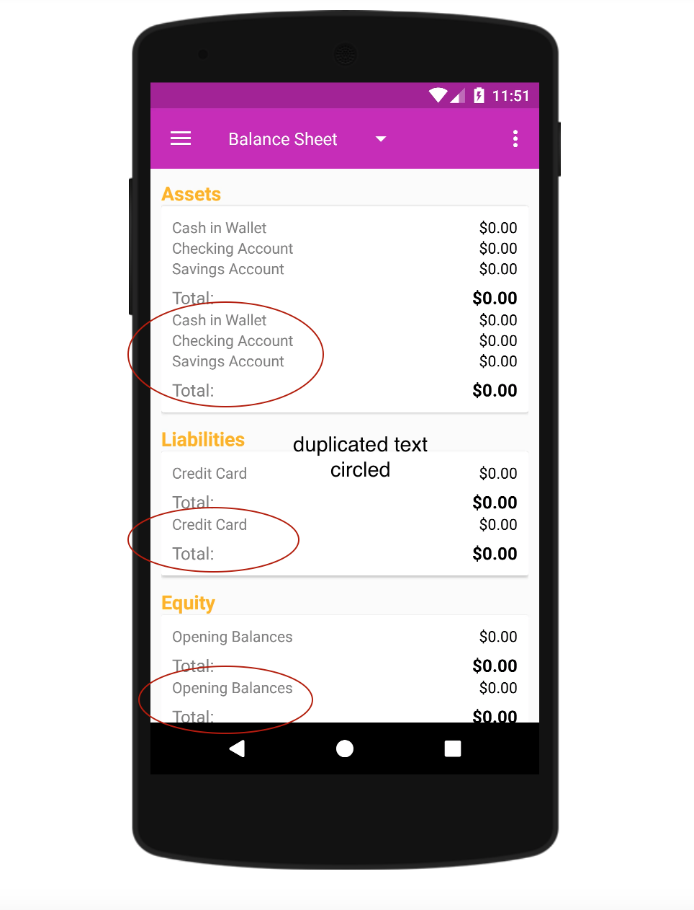

Bug summary:
After initially setting up the app, the “Balance Sheet” duplicates if you navigate to “Settings” and then back to the balance sheet page.
Observed Behavior (a description of what happened with the app):
After navigating initial app setup, click "Reports" under the dropdown menu at left, then the pink "Sheets" button, and then "Settings" on the left dropdown menu. Then, use the back arrow in upper left corner to navigate back to the "Balance Sheet." The Balance Sheet shows each line under Assets, Liabilities, and Equity twice. The repeated text lines occur as a group (i.e. the lines appear in the correct order, and then the sequence repeats a second time); see screenshot below.
Expected Behavior (a description of what you expected to happen):
After clicking "Settings" and then navigating back to the "Balance Sheet" page, each line of text--item with a potential monetary value--should appear only once.
Steps to Reproduce (the steps to reproduce the problem):
1. Navigate setup with pre-selected boxes checked (click "Next" each time), click "Automatically send crash reports" under Feedback Options, "Allow" app to access photos, media, etc.
2. Click dropdown menu at left, click "Reports"
3. Click pink "Sheet" button
4. Click dropdown menu at left, click "Settings"
5. Click back arrow at top left of screen
6. The Balance Sheet now shows groups of items duplicated, as shown in attached screenshot.
Additional information:
Attachments:
